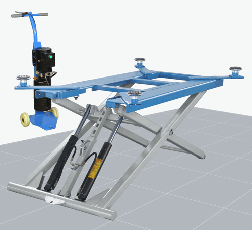
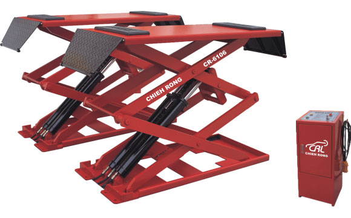
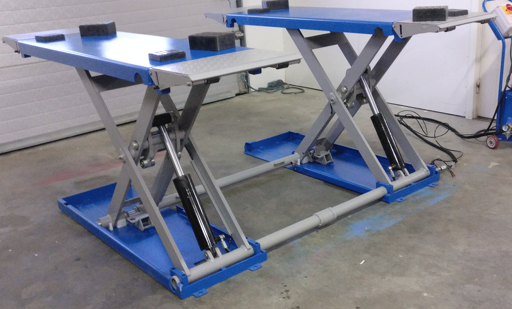
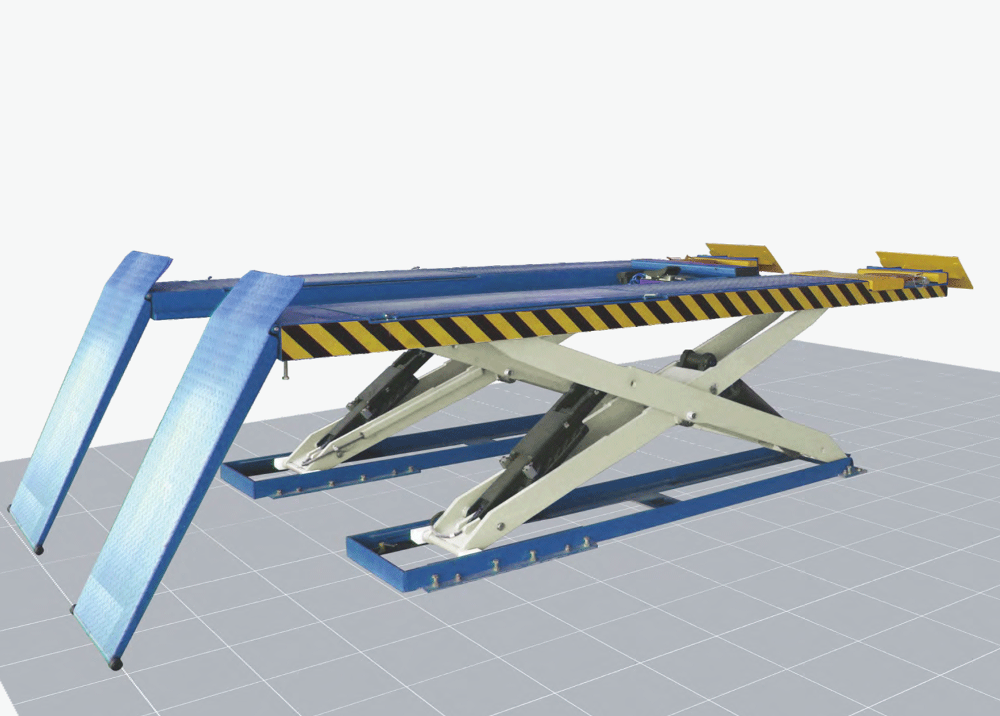
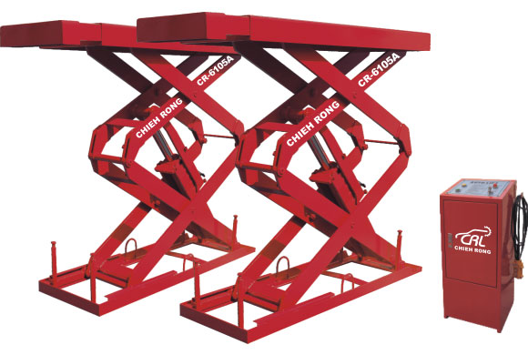

Saksinostin Hauvrex 6128
Saatavilla
1 990 € sis. alv 25,5%
- Kapasiteetti 2,8 t
- Minimikorkeus n. 115 mm — Max. 1 200 mm
- Siirrettävä malli
- Paino 400 kg
- 380 V / 220 V 50 Hz / 60 Hz
- CE merkitty
Saksinostimet ovat kuuluneet Korjaamokoneen perusvalikoimaan jo pitkään. Valimoimasta löytyy tuotteet joka tarpeeseen. Esimerkiksi siirrettävä saksinostin Hauvrex 6128 on laadukas mutta silti vielä varsin edullinen vaihtoehto peruskäyttöön. Haettaessa lisää jämäkkyyttä ja toiminnallisuuksia vaihtoehtona on valita esimerkiksi CR-6106.




